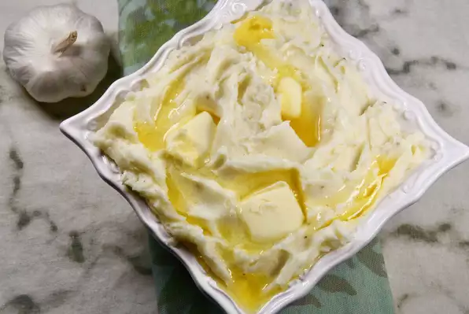

Bring a large pot of water to a boil. Add potatoes and boil until soft, 20 to 25 minutes.
Drain potatoes and place in a large bowl.
Add milk, butter, garlic, salt, and pepper to potatoes. Beat with an electric mixer or mash with a potato masher until potatoes reach the desired consistency.
Transfer potatoes to a serving bowl and sprinkle with sesame seeds.
Per Serving: 417 calories; protein 12.6g; carbohydrates 57.3g; fat 14.8g; cholesterol 32.9mg; sodium 107.5mg.
